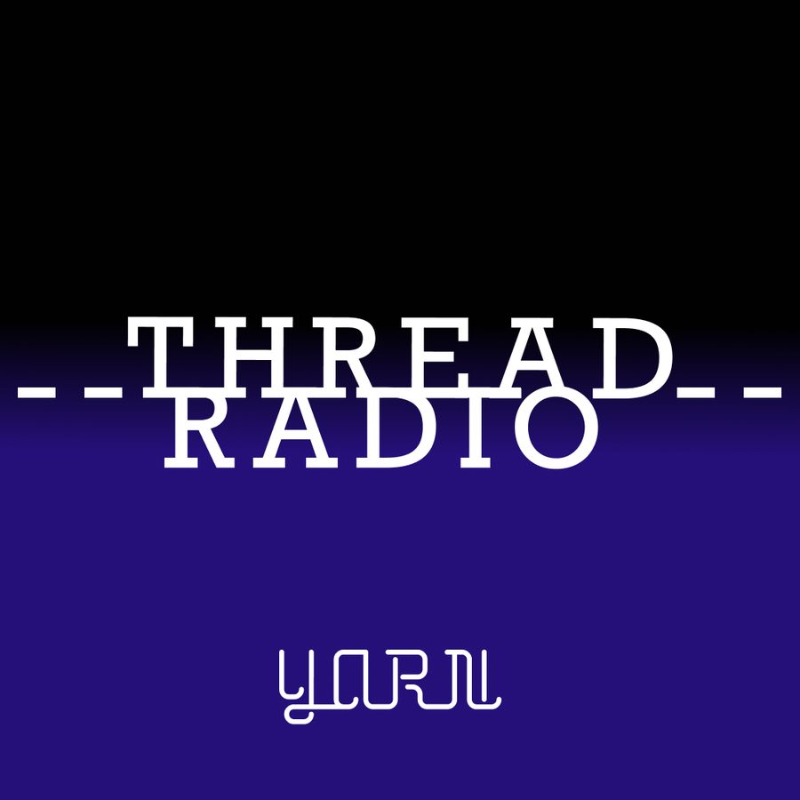

Thread Radio
From the makers of the Yarn story podcast comes this radio show. Dedicated to recommending podcasts, movies, documentaries, YouTube channels, music.. basically anything that makes a sound.
Your Host John Roche puts on his best late night smokey voice and guides you through his selections, threading one choice on to the next.
We're releasing it on MixCloud because on MixCloud we can play music, in full – just like on a regular radio show.
Part 1 features:
Pesteg Dred, Nicolas Winding Refn’s Only God Forgives, Cliff Martinez, Justin Hurwitz, Amy Shira Teitel, Public service broadcasting, Iggy pop, The Skatt Brothers, Julien Faraut’s John McEnroe: In the Realm of Perfection and BBC 3 Between the ears
Part 2 features:
Gil Scott Heron, Lynne Ramsay’s You Were Never Really Here, Jonny Greenwood, Kyu Sakomoto, Feargal Sharkey, The Commitments, The Snapper, Brian Eno, Triona and Maighread ni Domhnaill, John Hurt, RadioLab, Johann Johannasson, The Truth, BBC3 Between the ears, The Gerry Ryan Show, Moot tapes, Handel, Cannonball Aderley